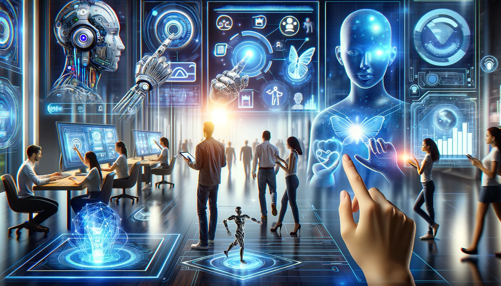

Введение
Информационные технологии (IT) — это сфера, охватывающая создание, хранение, обработку и передачу информации с помощью компьютеров и программного обеспечения. IT играет ключевую роль в современном мире, обеспечивая работу всех отраслей — от медицины и образования до бизнеса и науки.
История IT
История IT началась с изобретения компьютеров в середине XX века. Первый электронный компьютер ENIAC появился в 1946 году. Затем началось развитие программирования, интернета и персональных компьютеров. В 1990-х годах с появлением Всемирной паутины (WWW) произошёл IT-бум, и с тех пор технологии стремительно развиваются.
- 1940-е — Появление первых ЭВМ
- 1970-е — Создание персональных компьютеров
- 1990-е — Распространение интернета
- 2000-е — Развитие мобильных технологий
- 2020-е — Искусственный интеллект и большие данные

Зачем нужен IT?
IT обеспечивает автоматизацию, хранение данных, безопасность, обработку информации и связь между людьми. Это основа цифрового мира — от социальных сетей до банковских систем. IT-профессии позволяют работать удалённо, достойно зарабатывать и постоянно развиваться.
- Автоматизация задач
- Обработка и анализ данных
- Обеспечение кибербезопасности
- Разработка приложений и сайтов
- Коммуникации и управление системами
Какие сферы есть в IT?
- Разработка программного обеспечения
- Веб-разработка
- Кибербезопасность
- Data Science и анализ данных
- Сетевое администрирование
- UX/UI-дизайн
- Мобильная разработка
- DevOps и автоматизация
- Game Development (разработка игр)
- Искусственный интеллект и машинное обучение
Описание каждой сферы
- Веб-разработка — создание сайтов и веб-приложений.
- Программирование — написание программ на языках вроде Python, C#, Java.
- UX/UI-дизайн — проектирование удобных и красивых интерфейсов.
- Аналитика данных — работа с данными, прогнозирование и визуализация.
- Кибербезопасность — защита информации от хакеров.
- Системное администрирование — настройка и поддержка серверов и сетей.
- DevOps — объединение разработки и эксплуатации.
- GameDev — создание компьютерных игр.
Как войти в IT
Чтобы начать карьеру в IT, важно выбрать сферу, освоить основы, пройти онлайн-курсы, делать проекты и создать портфолио. После этого можно искать стажировки или фриланс-заказы.
- Выбери направление (например, Frontend или Data Science)
- Пройди онлайн-курсы (Udemy, Coursera, Stepik)
- Практикуйся — делай свои проекты
- Создай портфолио и резюме
- Смотри вакансии, проходи стажировки
Часто задаваемые вопросы
- Сколько времени нужно, чтобы войти в IT? — От 3 до 12 месяцев при регулярном обучении.
- Нужно ли знать английский? — Да, хотя бы на базовом уровне.
- Можно ли без диплома? — Да, главное — навыки и портфолио.
- Сколько можно зарабатывать? — От 500 до 5000$ в зависимости от уровня и страны.
- Какую сферу выбрать? — Начни с той, что тебе ближе: фронтенд, дизайн, анализ данных и т.п.